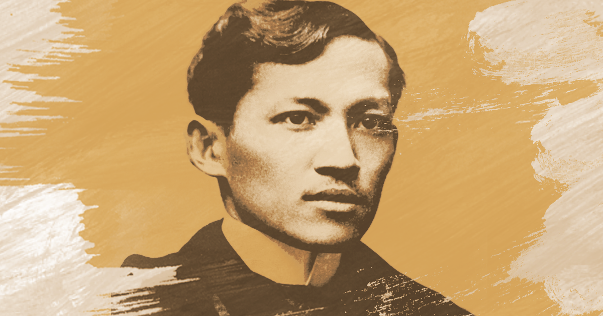

Physician, Writer, and Patriot [1][2]
The heroism of José Rizal was not an accident of fate, but the product of inherited brilliance, a nurturing yet turbulent environment, formative life experiences, and an iron resolve forged through suffering — all converging to make him the most enduring symbol of Filipino nationhood.

Dr. José Protasio Rizal Mercado
y Alonso Realonda
Rizal was born into the Mercado-Rizal family of Calamba, Laguna [1][5] — a lineage of mixed Chinese, Spanish, Filipino, and Japanese ancestry. This rich genetic heritage endowed him with extraordinary intellectual capacity, exceptional memory, and a deep sensitivity to beauty and injustice.
His father, Francisco Engracio Rizal Mercado, was a self-made man of industry and discipline, while his mother, Teodora Alonso Realonda, was a deeply educated woman who taught young José his first letters. [5] From his father he inherited tenacity and practicality; from his mother, literary sensibility and moral courage.
Rizal is often described in Rizal biographies as a precocious child with an exceptional memory [5] — by age two he could already read and by eight had written his first poem. Such precocity suggests not just environmental encouragement but genuine inherited cognitive gifts that set him apart from his contemporaries.
Standing at approximately 4'11" (150 cm), Rizal was notably small in stature [5] — a physical reality that, far from diminishing him, seemed to fuel his determination to prove himself through intellect and moral authority. His slight frame belied remarkable endurance and agility.
He was widely noted for his piercing, expressive eyes and composed demeanor — features that commanded attention in any room. His physical appearance, often unremarkable to the casual observer, became a symbol in itself: here was a man whose power was entirely of the mind and spirit.
As a trained physician and ophthalmologist, Rizal approached many problems with a scientific and observant mindset. [3] This scientific perspective shaped his advocacy — he approached social reform not as abstract idealism but as a diagnosis of systemic disease requiring careful, evidence-based treatment.
Polyglot fluent in over 20 languages, medical doctor, novelist, poet, sculptor
Inherited creative gifts manifested in literature, painting, and sculpture
Despite small stature, practiced fencing, gymnastics, and martial discipline
Medical training shaped empirical, rational approach to social problems
The Rizal household was a model of middle-class Filipino intellectual aspiration under colonial rule. [5] His mother, despite later being unjustly imprisoned by Spanish authorities, instilled in all her eleven children a love of learning, poetry, and God.
Growing up in Calamba, José witnessed firsthand the hacienda system that bound Filipino farmers to Spanish friars. The dispossession of his own family's land by Dominican friars became a formative wound — abstract injustice rendered viscerally personal.
Rizal studied at the Ateneo Municipal de Manila where he excelled [3][5], earning medals and recognition. He later enrolled at the University of Santo Tomas but found its scholastic atmosphere stagnant and discriminatory toward Filipino students.
This dissatisfaction drove him to Madrid, where he enrolled at the Universidad Central. [3] Exposure to Enlightenment thought, liberal European politics, and the Propaganda Movement transformed his educational frustration into revolutionary intellectual energy.
The Philippines under 19th-century Spanish colonial rule was a society of rigid racial hierarchy. [2][5] Peninsulares (Spanish-born) dominated; Insulares (Spanish-Filipino) occupied middle status; and Indios (native Filipinos) were systematically marginalized by law, church, and commerce.
This context gave Rizal's genius a purpose. His brilliance alone might have secured him comfort and status — but the colonial system's cruelties gave his gifts a direction: liberation of his people through enlightened thought rather than armed revolt.
"He who does not love his own language is worse than an animal and smells worse than a fish."— José Rizal
From 1882 to 1892, Rizal traveled through Europe and other places for study, reform work, and professional training [2][3][5] — an extraordinary journey for a Filipino of his era. In Spain he became one of the leading figures of the Propaganda Movement and contributed to the reformist newspaper La Solidaridad. [2] In Germany he published his landmark novels. In London he annotated Antonio de Morga's Sucesos de las Islas Filipinas [2] to recover suppressed Philippine history.
He studied ophthalmology in Paris under Louis de Wecker and also trained under Otto Becker [3], and practiced medicine in Hong Kong — proving that Filipino intellectual and professional achievement could rival any European. Each country added a layer of perspective to his already formidable understanding of colonialism and nationalism.
His landmark novels, Noli Me Tangere (1887) and El Filibusterismo (1891) [1][2], written in exile, were literary grenades thrown into the heart of colonial complacency — exposing Church corruption, racial injustice, and the slow death of Filipino dignity under Spanish rule.
Banished to the remote town of Dapitan in Mindanao [1][4][5], Rizal could have succumbed to despair. Instead, he flourished. He built a school and contributed to practical public works, including a water system that benefited the community. [4][5] He practiced medicine among the poor, conducted scientific research, corresponded with international scholars, and fell in love with Josephine Bracken.
Dapitan revealed the full dimension of Rizal's heroism — not just the pen and the protest, but the quiet, daily work of nation-building at the grassroots level. He was, in microcosm, the Philippines he dreamed of.
Implicated in the Katipunan uprising of 1896 [1][5], Rizal was arrested, tried by a military court in a travesty of justice, and condemned to death. He was offered clemency if he would renounce his writings and convert back to the Church — he refused any renunciation that compromised his integrity.
On December 30, 1896, at Bagumbayan [1] (now Luneta Park), he was shot by a firing squad. He requested to face the firing squad and reportedly turned at the moment of execution so that he would fall face upward, under the open sky. His final poem, Mi Último Adiós, was traditionally remembered as being hidden in an alcohol lamp before his death [5] — a farewell of devastating beauty that sealed his immortality.
Born the seventh of eleven children to Francisco Rizal Mercado and Teodora Alonso. [5]
The martyrdom of three Filipino priests profoundly affected the young Rizal [5], politicizing him for life.
Secret departure for Madrid to study medicine and pursue reformist activism in Europe.
His first novel electrified the Filipino community and enraged Spanish colonial authorities.
Founded La Liga Filipina; arrested and exiled to Dapitan where he spent four years. [1][2]
Martyred at 35. His death inspired Filipino nationalism and became part of the movement toward independence. [1]
Dared to name injustice in print when silence was the safer and easier path for an ilustrado.
Believed in reform through education and persuasion rather than armed revolution. [1][2][5]
His compassion extended to all peoples — he practiced medicine and served the community during his Dapitan exile. [4][5]
Never stopped studying — even in exile in Dapitan he remained active in science, education, and community work. [4][5]
Refused to compromise his convictions even when offered his life in exchange for recantation.
All his gifts were freely offered to his nation — not to personal wealth, fame, or foreign comfort.
The young Rizal who left for Spain in 1882 was brilliant but largely apolitical — a talented student seeking professional advancement. Contact with the ilustrado community in Madrid, exposure to Spanish liberal thought, and the bitter reality of racial discrimination transformed him into a conscious nationalist.
The mature Rizal of Dapitan was calmer, more inward, and perhaps wiser about the limits of literary revolution. Exile stripped him of illusions about quick reform but deepened his commitment to the long, patient work of uplifting his people through education, science, and medicine — one life at a time.
Rizal faced challenges that would have crushed lesser men. Racial discrimination and colonial prejudice shaped the conditions that Rizal criticized in his reform writings. [2][5]
His family suffered for his activism. His mother was imprisoned, an event often discussed in Rizal biographies as an injustice that affected his family deeply. [5] His brother was arrested. Friends and collaborators were deported or executed. Every publication he wrote brought danger not just to himself but to those he loved — a burden of moral anguish that pervades his correspondence.
Financial hardship was chronic. He lived frugally in Europe, funding his education and publications through self-sacrifice. In Dapitan he was a prisoner in everything but name, cut off from the intellectual world that nourished him, watching the Philippines from exile.
His final trial was the cruelest blow: a judicial farce in which the verdict was predetermined, the evidence fabricated, and the sentence inevitable. Yet even here, Rizal maintained composure, dignity, and intellectual clarity.
Each of these trials transformed rather than defeated him. Racial discrimination in Europe did not produce bitterness — it produced Noli Me Tangere, a novel that named the wound with surgical precision and universal compassion. The persecution of his family did not produce cowardice — it produced firmer resolve and deeper solidarity with every Filipino family suffering under the same system.
His exile to Dapitan became one of his most sustained periods of community service. [4][5] Far from the printing presses and political salons of Manila and Madrid, he built schools, clinics, and infrastructure — embodying the reform he had only theorized in his novels.
His execution became a powerful symbol that inspired Filipino nationhood. [1] Mi Último Adiós, penned the night before his death, is not a lament but a serene farewell that transforms martyrdom into an act of love.
"I die without seeing the dawn brighten over my native land. You who have it to see, welcome it — and forget not those who fell during the nighttime."— Mi Último Adiós, December 1896
The life of José Rizal defies simple categorization. He was not a revolutionary in the conventional sense — he took up no arms, led no battles, commanded no armies. His weapons were the pen, the scalpel, and the school. His battlefield was the mind of every Filipino who read his words and felt, perhaps for the first time, that their suffering was not ordained by God but imposed by men — and therefore capable of being undone by men.
The factors that shaped Rizal — his inherited brilliance, his mother's nurturing love of letters, the colonial wound that gave genius a purpose, the European education that sharpened his analysis, the exile that tested his integrity — all converged in a single human life of extraordinary coherence and tragic brevity.
His shortcomings are real: he underestimated the appetite of the Filipino poor for revolution; he placed perhaps too much faith in the power of enlightened persuasion to move entrenched power. Yet these very limitations make him more human, not less heroic — for he achieved what he achieved not as a perfect icon but as a flawed, brilliant, deeply feeling man who simply refused to look away from injustice or to stop working against it.
Today, 130 years after his execution at Bagumbayan, Rizal's legacy endures not as a museum piece or a mandatory school subject but as a living question: in the face of systemic injustice, what will you do with your gifts?
Note: Some parts of this webpage are interpretive character analysis. The visible source numbers are placed beside factual claims, while the analytical conclusions are based on the cited biographies and historical sources.